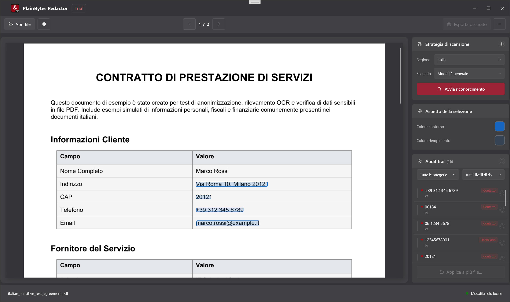

Scritta per l’attuale app desktop per Windows. Se qualcosa non coincide con la versione installata, fa fede l’interfaccia dell’app.
1. A cosa serve questa app
1.1 Redazione reale vs copertura visiva
Questi due approcci hanno implicazioni molto diverse per conformità e sicurezza:
Aspetto
Copertura visiva (la classica “barra nera”)
Redazione reale (l’obiettivo di questa app)
Dentro il PDF
Testo, vettori o immagini possono rimanere nel file, spesso soltanto coperti da un altro elemento grafico.
Il contenuto corrispondente viene rimosso dal flusso del documento, così non è recuperabile tramite una normale analisi del PDF.
Copia / ricerca
A seconda dello strumento, il testo “nascosto” potrebbe ancora essere copiabile.
L’obiettivo è che il testo selezionabile non contenga più le stringhe sensibili (da verificare sul file esportato).
Ideale per
Lettura a schermo o coperture temporanee.
Condivisione esterna, archiviazione, audit, due diligence: tutti i casi in cui il contenuto deve sparire definitivamente.
PlainBytes Redactor è progettato per la redazione reale. Usate Conferma per indicare con precisione quali aree verranno effettivamente rimosse all’esportazione.
1.2 Cosa intendiamo per “locale e offline”
Il lavoro resta su questo PC: apertura del PDF, corrispondenza delle regole, scrittura del file redatto e convalida avvengono in locale.
Nessun caricamento del documento per la redazione: il prodotto non è progettato per inviare i vostri file al cloud durante il flusso di redazione.
Da distinguere da guida e aggiornamenti: quando aprite Guida, Controlla aggiornamenti o voci simili, Windows può avviare il browser o Microsoft Store. Questo è separato dal mantenere offline il percorso di redazione.
1.3 Quando è adatta
Flussi di lavoro legali, finanziari, sanitari, pubblici o di audit in cui servono revisione umana e una superficie di esposizione ridotta.
Dovete distribuire un PDF ma rimuovere documenti d’identità, numeri di conto, recapiti e altri dati identificativi.
Avete molti PDF con la stessa impaginazione: dopo la conferma su un file “modello”, potete usare Applica a più file per riutilizzare la stessa geometria sugli altri (vedere il passaggio G nel §3 e il §9).
2. Concetti chiave
2.1 Marcature di redazione (RedactionMark)
Internamente, ogni area che potreste redigere è una marcatura di redazione: in pratica, un rettangolo su una pagina con alcuni metadati.
Pagina e rettangolo: posizione e dimensioni nelle coordinate del PDF.
Stato: in sospeso o confermata. Solo le marcature confermate vengono rimosse all’esportazione.
Origine: regole (pattern/regex) o selezione manuale, per distinguere i risultati automatici dai riquadri tracciati a mano.
Categoria e rischio: usati per filtrare, ordinare e applicare azioni in blocco nell’elenco di audit.
2.2 Cosa significa “confermare” e perché è manuale
L’automazione non decide da sola: la corrispondenza delle regole può segnalare troppo testo normale o mancare dati sensibili reali. L’app quindi non presume mai che “tutto ciò che è stato trovato vada eliminato”.
Confermare = approvare dopo la revisione: una volta confermata, la marcatura entra nell’insieme da esportare; ciò che resta in sospeso non viene trattato come definitivo.
Allineato alla revisione reale: questo passaggio aggiuntivo rispecchia controlli a due persone, tracciabilità di audit ed evita di cancellare per errore un’intera pagina con un clic.
2.3 La base geometrica per il batch
Non esiste un flusso del tipo “salva come modello nominato e sceglilo più tardi”. Il batch usa una base geometrica in memoria: quando si passa al batch tramite Applica a più file, l’app trasforma ogni marcatura confermata del documento corrente in un rettangolo normalizzato (pagina + coordinate relative alla dimensione della pagina), solo per quella sessione batch.
Per ogni PDF in coda, il motore batch applica solo quei rettangoli: non esegue un nuovo passaggio completo di regole per ogni file.
Quando va bene: più esportazioni dallo stesso sistema con la stessa impaginazione e le aree sensibili negli stessi punti (per esempio estratti uniformi). Se l’impaginazione cambia, i riquadri possono finire nel punto sbagliato: controllate i primi risultati.
Regole nel centro: aiutano a trovare corrispondenze nel flusso a file singolo corrente; non vengono rieseguite automaticamente per ogni file in coda. Il batch usa le posizioni confermate che avete già fissato.
3. Flusso di lavoro completo
Scenario di esempio
In questo esempio, un revisore legale deve distribuire all’esterno un PDF di offboarding di un dipendente di 8 pagine. Devono essere rimossi numeri di cellulare, frammenti di carte bancarie e indirizzi e-mail personali. Il file è un vero PDF elettronico con testo selezionabile, non una scansione piatta.
Panoramica del flusso
Passaggio A: aprire il documento
Usate Apri o il trascinamento per caricare il PDF (sono supportati anche i formati immagine comuni; il percorso nell’app può variare).
Tutto — anteprima, rilevamento e marcature — è legato a questo file sorgente, quindi aprite la versione che intendete davvero redigere.
Passaggio B: scegliere area e scenario nel centro regole
Aprite Regole, scegliete un’area (paese/zona), poi uno scenario aziendale (generico, finanziario, ecc.). Attivate o disattivate le regole integrate, oppure aggiungete regole personalizzate se serve.
L’insieme effettivo di regole cambia con area e scenario; scegliere lo scenario sbagliato può lasciare disattivate regole utili o generare più rumore. Potete salvare le preferenze prima di chiudere, così il prossimo documento simile sarà più rapido.
Passaggio C: avviare il rilevamento
A destra, nella strategia di scansione, fate clic su Avvia rilevamento (o sul controllo equivalente) e attendete che il modello del documento e l’analisi completa finiscano.
I risultati delle regole diventano un elenco di marcature in sospeso. Se cambiate area, scenario o regole, avviate di nuovo il rilevamento per aggiornare l’elenco.
Passaggio D: controllare nell’elenco di audit
Nel tracciato di audit a destra, esaminate gli elementi uno per uno o usate i filtri. Confermate ciò che deve sparire; annullate la conferma o rimuovete le righe per i falsi positivi (i controlli esatti dipendono dalla versione). Le sovrapposizioni gialle nell’anteprima di solito restano sincronizzate: un clic può cambiare lo stato di conferma.
Questo passaggio evita di eliminare la cosa sbagliata o lasciare dati indietro; l’esportazione considera solo le marcature confermate.
Passaggio E: tracciare riquadri per ciò che manca
Trascinate rettangoli nell’anteprima a sinistra su ciò che regole non hanno trovato, ma che sapete debba essere redatto. Regolate i colori della selezione se aiuta su sfondi complessi.
Il rilevamento automatico non trova tutto; i riquadri manuali sono la vostra rete di sicurezza.
Passaggio F: esportare
Scegliete Esporta redatto, indicate dove salvare e leggete il riepilogo finale (quanti elementi sono stati rimossi, pulizia dei metadati, messaggi di convalida).
Otterrete una copia pronta da condividere; il riepilogo è un controllo rapido. Se segnala avvisi, aprite il PDF esportato e fate una verifica a campione.
Passaggio G (facoltativo): applicare ad altri file
Dopo aver confermato in questo PDF tutto ciò che deve essere redatto, usate Applica a più file (o la voce equivalente). L’app costruisce la base normalizzata descritta sopra e apre la redazione batch. Aggiungete altri PDF con la stessa impaginazione, impostate una cartella di output, scegliete se rimuovere i metadati e avviate.
Quando le impaginazioni coincidono davvero, evitate di rifare le stesse conferme file per file; il batch rimuove fisicamente comunque le aree nei riquadri. Importante: non è un modello nominato riutilizzabile su disco. Non esiste un file modello separato; la base deriva da questo documento confermato. Il batch inoltre non riesegue il rilevamento regole per ogni file in coda. Se l’impaginazione di un file è cambiata, tornate al flusso a file singolo.
4. Panoramica della finestra principale

Finestra principale
4.1 Anteprima (a sinistra)
A cosa serve: visualizza ogni pagina del PDF (o immagine), così numeri di pagina e impaginazione corrispondono al file.
Marcature: le aree in sospeso, automatiche o manuali, appaiono evidenziate; facendo clic su un’area spesso si cambia lo stato di conferma insieme all’elenco (il segnale giallo dipende dalla versione).
Riquadri manuali: fate clic e trascinate sull’anteprima per aggiungere una marcatura rettangolare.
4.2 Pannello della strategia di scansione
A cosa serve: punto di ingresso per avviare il rilevamento (ad esempio Avvia rilevamento), coerente con area, scenario e set di regole del centro.
Perché è separato: distingue “quando analizzare tutto il documento” da “come lavorare sull’elenco di audit”, riducendo la confusione.
4.3 Aspetto delle selezioni
A cosa serve: regolare l’aspetto delle selezioni manuali — bordo, riempimento, colori personalizzati — in modo che i riquadri restino visibili su sfondi complessi.
Nota: è solo un aiuto visivo; la redazione dipende comunque da conferma ed esportazione.
4.4 Elenco di audit
A cosa serve: raggruppa i risultati sensibili del documento aperto, con filtri per categoria e rischio, più azioni di conferma o annullamento per riga o in blocco.
Sincronizzazione con l’anteprima: selezionare o modificare una riga di solito scorre/evidenzia la pagina; facendo clic su una marcatura nell’anteprima si aggiorna lo stato nell’elenco.
4.5 Barra strumenti (dall’alto verso il basso)
Apri: scegliete un PDF locale o un’immagine supportata.
Chiudi documento: chiude il file corrente.
Pagina precedente / successiva: usate la barra strumenti. Nella pagina a file singolo, Page Up / Page Down sono gestiti separatamente per scorrere l’anteprima (vedere §7.3).
Regole: apre il centro regole.
Batch: apre la redazione batch.
Esporta redatto: disponibile quando esistono marcature confermate.
Altro (⋯): lingua, guida, feedback, aggiornamenti, informazioni e così via.
La barra di stato mostra, tra le altre indicazioni, se l’app è pronta e il nome del file corrente.
5. Centro regole
5.1 Area e scenario aziendale
Area: paese/zona; determina quali pattern integrati si applicano (formati ID, regole telefoniche, ecc.).
Scenario aziendale: restringe o mette in evidenza gruppi di regole (generico, finanziario, sanitario, legale/governativo), così i valori predefiniti si adattano al tipo di documento.
Insieme: impostate prima l’area, poi lo scenario; dopo le modifiche, eseguite di nuovo il rilevamento, altrimenti potreste vedere ancora risultati vecchi.
5.2 Regole integrate vs personalizzate
Integrate: fornite con l’app, raggruppate per tipo (identità, finanza, indirizzi, contatti, …), attivabili regola per regola, basate su dati locali e completamente offline.
Personalizzate: un’etichetta e un pattern, come sottostringa semplice (senza distinzione maiuscole/minuscole) o espressione regolare .NET. Utili per codici interni non conosciuti dalle regole integrate. Potrebbe esserci un limite al numero di regole aggiungibili.
5.3 Quando modificare le regole
Troppo rumore: disattivate temporaneamente regole troppo ampie o scegliete uno scenario più vicino.
Lo stesso pattern ricompare spesso e nessuna regola integrata corrisponde: aggiungete una regola personalizzata per ridurre i riquadri manuali.
Una riga spesso raggruppa più occorrenze dello stesso tipo sensibile o della stessa chiave su più pagine; confermarla significa dire che tutti quei punti devono essere rimossi.
In sospeso separa la “stima del modello” dalla “decisione umana”, così nulla viene scritto in blocco senza revisione.
Per scelta progettuale, il motore di esportazione usa solo le marcature confermate.
6.2 Filtri e conferma in blocco
Filtro: restringete per categoria o rischio, così potete affrontare prima gli elementi ad alto rischio o un tipo di campo (ad esempio solo i contatti).
In blocco: cambia lo stato di conferma per tutto ciò che è visibile con il filtro corrente (il testo dipende dalla versione). È utile quando un intero gruppo è chiaramente corretto o chiaramente sbagliato.
Suggerimento: controllate il filtro attivo prima di un’azione in blocco, per non includere righe che non intendevate trattare.
6.3 Livelli di rischio
I livelli (per esempio critico, alto, sospetto, medio, basso) aiutano a ordinare e filtrare per far emergere prima i risultati più rischiosi. Non obbligano a confermare: decidete comunque voi cosa redigere.
7. Selezioni manuali
7.1 Quando tracciare riquadri manuali
Le regole hanno mancato qualcosa che sapete di dover rimuovere: annotazioni manoscritte in foto, aree con layout insolito, ecc.
I risultati sono frammentati o disallineati: rimuovete le righe automatiche errate e tracciate un riquadro più preciso.
Contenuto solo scansionato trattato come immagine: il comportamento differisce dai PDF testuali; spesso userete riquadri manuali (vedere le FAQ).
7.2 Lavorare con le marcature rilevate automaticamente
Ordine pratico: avviare il rilevamento → usare l’elenco di audit per eliminare i falsi positivi evidenti e notare pattern → aggiungere alcuni riquadri manuali per le vere mancanze → scorrere rapidamente l’anteprima pagina per pagina. Le marcature manuali e automatiche sono trattate allo stesso modo all’esportazione: conta solo se sono confermate.
7.3 Scorciatoie da tastiera (anteprima e marcature)
Quando la pagina a file singolo è caricata, registra PreviewKeyDown sulla finestra principale. Le scorciatoie qui sotto funzionano solo con un documento aperto e con l’app non occupata. Non sono collegate ai pulsanti pagina precedente/successiva della barra strumenti.
Tasto
Azione
Tab
Marcatura di redazione successiva.
Shift + Tab
Marcatura di redazione precedente.
←↑→↓
Senza modificatori: ←↑ selezionano la marcatura precedente, →↓ quella successiva. Con un modificatore premuto: solo ↑↓ fanno scorrere l’anteprima di un passo fisso; ←→ non sono gestiti in quel ramo.
Enter
Senza modificatori: attiva/disattiva la conferma sulla marcatura selezionata.
Delete
Senza modificatori: rimuove la marcatura selezionata.
Page Up / Page Down
Scorre la pila di anteprima di circa un’altezza di viewport.
Home / End
Porta lo scorrimento dell’anteprima in alto / in basso.
8. Esportazione
8.1 Controlli prima dell’esportazione
Verificate che sia il file che intendete distribuire (numero di pagine, allegati).
Tutto ciò che deve essere redatto è confermato; ciò che deve restare visibile è annullato o rimosso dall’elenco.
Avete controllato visivamente le pagine chiave nell’anteprima, comprese scansioni o sezioni insolite incorniciate manualmente.
Sapete che l’esportazione scrive un nuovo file (o nel percorso scelto) e di solito non sovrascrive l’originale: il comportamento segue la finestra di salvataggio.
8.2 Perché rimuovere i metadati
Oltre al contenuto delle pagine, i PDF possono contenere autore, produttore, timestamp, XMP e altro. Redigere il testo ma lasciare i metadati può ancora rivelare account interni o cronologia di modifica. L’app può pulirli in esportazione (e opzionalmente in batch). Per qualunque documento destinato all’esterno, di solito è meglio lasciare attiva la pulizia dei metadati quando l’interfaccia la offre.
8.3 Leggere il riepilogo
Il numero di elementi rimossi fisicamente è coerente con ciò che avete visto?
Il riepilogo indica che i metadati sono stati puliti?
Se vedete avvisi di convalida del testo, il campionamento automatico ha trovato qualcosa di insolito: aprite il PDF esportato e controllate. Non considerate il solo riepilogo come prova di assenza totale di residui.
9. Elaborazione batch
9.1 Cosa fa davvero la modalità batch
Dopo l’accesso tramite Applica a più file con una base, ogni PDF in coda segue un percorso solo a rettangoli: i rettangoli normalizzati vengono convertiti in coordinate assolute per pagina, le marcature vengono create, il contenuto viene rimosso fisicamente e i metadati possono essere puliti opzionalmente. Non esegue di nuovo il rilevamento regole per ogni file.
Le regole usate in modalità file singolo vi hanno quindi aiutato a trovare e confermare sul modello; il batch copia semplicemente le posizioni confermate sugli altri file con la stessa geometria.
9.2 Casi d’uso adatti
Molti PDF dallo stesso sistema con la stessa impaginazione e aree sensibili nelle stesse posizioni relative.
Avete già completato rilevamento e conferma su un esemplare e volete evitare di ripetere lo stesso lavoro su copie quasi identiche.
9.3 Aspetti da controllare
Nessun file modello salvato: chiudendo la finestra batch si perde la base in memoria; la prossima volta va ricreata da Applica a più file.
Aprire Batch dalla barra strumenti senza quel percorso può lasciarvi senza base: Avvia potrebbe restare disabilitato.
Piccoli spostamenti dell’impaginazione possono causare mancate redazioni o aree sbagliate; controllate a campione i primi output.
Attivate cancella proprietà e dati nascosti quando disponibile per la condivisione esterna.
Alcuni tipi di documento o livelli di licenza possono limitare il batch; se Applica a più file è disattivato, quello è il segnale.
10. Domande frequenti
10.1 Perché ci sono così tanti falsi positivi?
La corrispondenza delle regole usa euristiche: stringhe che sembrano sensibili, nomi di luoghi confusi con nomi di persone, frammenti di tabella e così via. Regolare scenario/regole, disattivare una regola rumorosa o annullare la conferma nell’elenco di solito basta a controllare il problema. La conferma manuale è intenzionale: riduce il rischio di eliminare con un clic qualcosa che serve ancora.
10.2 E i PDF scansionati?
Se il PDF è di fatto un’immagine di pagina senza un vero livello di testo, il rilevamento regole ha meno materiale su cui lavorare; userete quindi più spesso i riquadri manuali o il flusso specifico per raster esposto dalla versione (seguite i suggerimenti a schermo). È utile capire subito se si tratta di un PDF nato digitale o di una scansione.
10.3 Posso redigere immagini? Perché il testo nelle foto non viene riconosciuto?
Sì. I formati immagine comuni possono essere aperti come documenti; continuerete a usare anteprima, marcature ed esportazione. Per mantenere ragionevoli dimensioni dell’installer e costo di esecuzione, questa versione non include OCR: il testo nelle foto non diventa selezionabile, quindi la rilevazione basata su regole si applica pochissimo. Redigete le aree sensibili tracciando riquadri (e usando le scorciatoie da tastiera per spostarvi tra le marcature). Se vi serve “riconoscere e poi confrontare”, eseguite prima l’OCR altrove o fornite un PDF con livello di testo.
10.4 Come controllare rapidamente un’esportazione?
In un lettore PDF, provate seleziona tutto / copia e cerca le stringhe che sapete essere sensibili.
Controllate visivamente intestazioni, piè di pagina e note.
Leggete il riepilogo di convalida dell’esportazione dell’app; se mostra avvisi, ricontrollate prima quelle pagine.
Per casi ad altissimo rischio, aggiungete i controlli abituali della vostra organizzazione: secondo strumento, revisione stampata, ecc.